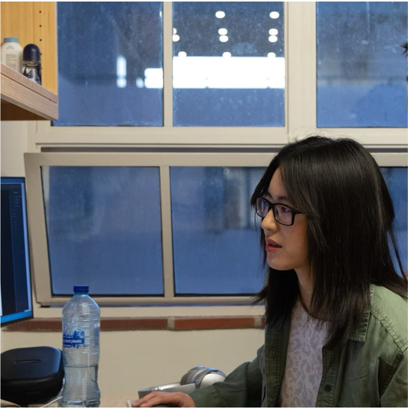

EcoSense team
Welcome to our team page! Here you will find information about the dedicated members who make our research possible.
Principal Investigator

Dr. Liyin He
Ecosystem Ecology, Remote Sensing, Artificial Intelligence, Sustainable Agriculture and Cities
PhD Students

Shiqi Miao
Socioecological Responses to Climate Change, Climate Resilience and Adaptation Strategies
Wenqing Zhou
Terrestrial Carbon Cycle, Carbon-Climate Feedbacks
Visiting Students/Scholars
Lingyi Zhu
Undergraduate visiting student from Nanjing University, working on urban temperature dynamics (Aug 2025-Jan 2026)
Hongru Wang
Visiting PhD student from the Chinese University of Hong Kong, working on the impacts of air quality on terrestrial carbon uptake (Dec 2025-May 2026)